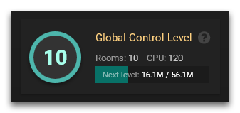
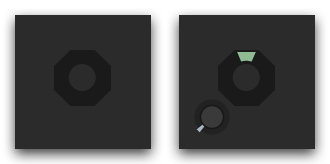
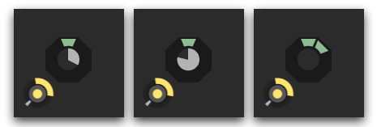

全局控制等级 （Global Control Level; 缩写：GCL）
为了扩展你在游戏世界中的疆土，你需要提升的一个主要指标是 Global Control Level（GCL）。他的主要影响有：
- 您的 CPU 限制。在官方服务器上，您将在开始游戏时获得 20 点 CPU 限额，您可以用其控制少量的单位。如果您通过使用 “CPU Unlock” 来解除了您的 CPU 限额，那么每提升一个 GCL 等级就可以多获得 10 点 CPU 资源，直到达到最大的 300 CPU 限制。
- 控制房间数量。比如说你想要控制 3 个房间就需要 3 级的 GCL。
你当前的 GCL 等级在 overview 页面 显示.

房间控制等级 （Room Control Level; 缩写：RCL）
如果想要在房间里建造设施，首先需要控制这个房间。在大多数房间里都有一个被称为 房间控制器（Room Controller）的特殊装置。你第一个房间里的房间控制器默认归你所有，其他的中立房间控制器可以通过带有 CLAIM 部件的 creep 占有以取得房间控制权。

新占领的房间控制器可以让你在该房间建造一个 Spawn。如果需要建造额外的 Spawn 或者其他扩展就需要通过 Creep.upgradeController给控制器输入能量来提升房间控制器等级 （Room Controller Level，RCL）。

RCL 等级对应可建造建筑
| RCL | 升级所需能量 | 建筑 |
|---|---|---|
| 0 | — | Roads, 5 Containers |
| 1 | 200 | Roads, 5 Containers, 1 Spawn |
| 2 | 45,000 | Roads, 5 Containers, 1 Spawn, 5 Extensions (50 容量), Ramparts (300K 最大生命值), Walls |
| 3 | 135,000 | Roads, 5 Containers, 1 Spawn, 10 Extensions (50 容量), Ramparts (1M 最大生命值), Walls, 1 Tower |
| 4 | 405,000 | Roads, 5 Containers, 1 Spawn, 20 Extensions (50 容量), Ramparts (3M 最大生命值), Walls, 1 Tower, Storage |
| 5 | 1,215,000 | Roads, 5 Containers, 1 Spawn, 30 Extensions (50 容量), Ramparts (10M 最大生命值), Walls, 2 Towers, Storage, 2 Links |
| 6 | 3,645,000 | Roads, 5 Containers, 1 Spawn, 40 Extensions (50 容量), Ramparts (30M 最大生命值), Walls, 2 Towers, Storage, 3 Links, Extractor, 3 Labs, Terminal |
| 7 | 10,935,000 | Roads, 5 Containers, 2 Spawns, 50 Extensions (100 容量), Ramparts (100M 最大生命值), Walls, 3 Towers, Storage, 4 Links, Extractor, 6 Labs, Terminal, Factory |
| 8 | — | Roads, 5 Containers, 3 Spawns, 60 Extensions (200 容量), Ramparts (300M 最大生命值), Walls, 6 Towers, Storage, 6 Links, Extractor, 10 Labs, Terminal, Factory, Observer, Power Spawn, Nuker |
攻击控制器
控制器无法被攻击或毁坏。然而，控制器在没有受到 upgradeController 的作用下会缓慢降级，比如说 RCL1 的时候 20,000 个游戏 tick 会降一级，具体的降级规则看 StructureController。当 RCL 等级降为 0 时，该房间控制器即变为中立，其他玩家就可以占领了。
当然你可以通过 attackController 影响别人的 RC 降级计时器。

提升GCL
升级 GCL 需要向控制器中注入能量，GCL 与控制器的级别是同步增长的，即便控制器已经满级，往控制器中注入能量依旧会使 GCL 上涨。。
一旦 GCL 级别提升就不会再降下来，即使游戏输到一个房间都不剩了。重新开始游戏时 GCL 仍然还是那么多，可以让你领先在起跑线上。
如果一个房间所需的 GCL 比你的高，你仍然可以保留（reserve）它的控制器。此外，保留中立房间的控制器能够将能源恢复到最大容量。